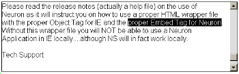

Australian Toolbook User Group


How to unselect text Solution by Morten Hjerde
Question: I need to unselect text. Is there a way to unselect text in a recordfield without actually changing the text and without selecting some other text instead?

Try putting this line in when you want to deselect the text:
focus = null
I solved a similar problem, one morning, the other day. Some of this stuff is arcane, but useful... Here is some sample code; I think you'll get the idea:
get item 2 of caretLocation item 2 of caretLocation = (It+1)
The text that was highlighted in your recordField becomes UNhighlighted. Voila!
Variation on this suggestion (my favorite way of unselecting text -- when I want the focus to remain in the field): 'caretLocation = Beg'; OR 'caretLocation = End', -- if you want the caret location to be at the very beginning or the end of the text in the field.
You can even say
caretLocation = caretLocation
That will unselect any selected text and the caretLocation doesn't change.
Selecting some text and then clicking on a button to tell you what it is Solution by Butch Carino, Asymetrix
Question: I'm trying to find a way to allow readers to print selections of text from fields (not record fields). I would like to use the textToPrinter command substituting a previously defined system variable for the string. Only trouble is, I cant figure out how to push the very transient selectedtext value into a system variable. How do you move selectedtext (ie text that the reader has highlighted by dragging) into a system variable. Everytime I try using a buttonclick handler the selected text is deselected before it can get pushed/put. I'm using MMTB 4.0
Answer: I came up with a solution that may help. If you place a leaveField handler in your field, use a system variable or userProperty to store the selected text, then you can recall that value within another handler. Here is an example:
-- script of a field where your user is selecting -- text to handle leaveField system foo foo = selectedText end -- script of a button (for testing) to handle buttonClick system foo request foo end
This example does not prevent the selected text from being de-selected.
Replacing text using the offSet() function
Question: I'm developing a CBT which includes questions. The questions are of the drag and drop variety. I would like to search a string (field) for certain continuous characters (______), and replace the text with the drag-n-drop.
Example: The man jumped over the _________ to reach his keys.
Replace the "________" and have several drag-n-drop answer to fill in the space. I would like the handler to work whether the "______" are in the beginning, middle or end of a question. If anyone has any experience with this please respond. I tried the Offset() function, but was unsuccessful.
I think offset IS the way to go. Shown below are two functions that I use to save some "Index" information in .ini file format. It takes a comma and replaces it with a unique character string (analogous to your "______"). Then the reverse
function finds this string, replaces the first char with the comma, and then deletes the rest of it. I believe you could do the same as long as your "______" was longer than the longest "drag-n-drop" answer.
-- this function replaces commas
-- with unique string from inputString and
-- returns the result
to get replaceCommasWithString \
string inputString
while "," is in inputString
-- string not likely to be repeated
char offset(",", inputString) of \
inputString = "|\&^%?"
end while
return inputString
end replaceCommasWithString
-- this function replaces unique string with commas
to get replaceStringWithCommas \
string inputString
local word numChar
local long num
while "|\&^%?" is in inputString
numChar = offset("|\&^%?", inputString)
char numChar of inputString = ","
step num from numChar + 1 to numChar + 5
char (numChar + 1) of inputString = null
end step
end while
return inputString
end replaceStringWithCommas
Hope this helps.
If you make the blank ___________ a hotword then you should be able to use drag and drop relatively easily.
To access thousands more tips offline - download Toolbook Knowledge Nuggets